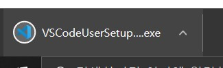
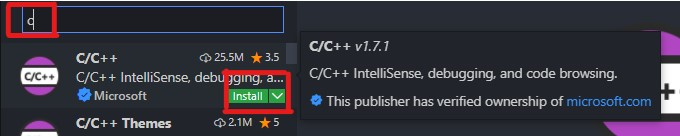

VSCode 설치하는 방법
1. VSCode 설치 페이지를 방문합니다.
2. 알맞은 컴퓨터 소프트웨어를 선택합니다.
+ 키보드에 창틀이 있으면 윈도우입니다(없다면 MAC).

3. 설치가 100%다 되면 그 박스를 클릭하세요.
4. 동의합니다를 선택하세요.

5. 다음(또는 Next) 버튼을 누르세요.

6. 설치 버튼을 누르세요.

7. 끝내기 버튼을 누르세요.

C 언어 프로그래밍 준비
1. VSCode 왼쪽 바에 4 큐브 모양의 버튼이 있습니다.
클릭하세요. (CTRL+SHIFT+X)

3. C라고 친 후 기다리세요
4. 처음으로 나타나는 확장 도구을 설치하세요 (install 버튼 누르기)
5. Code Runner을 치고 가장 먼저 나오는 확장 도구을 설치하세요 (install)